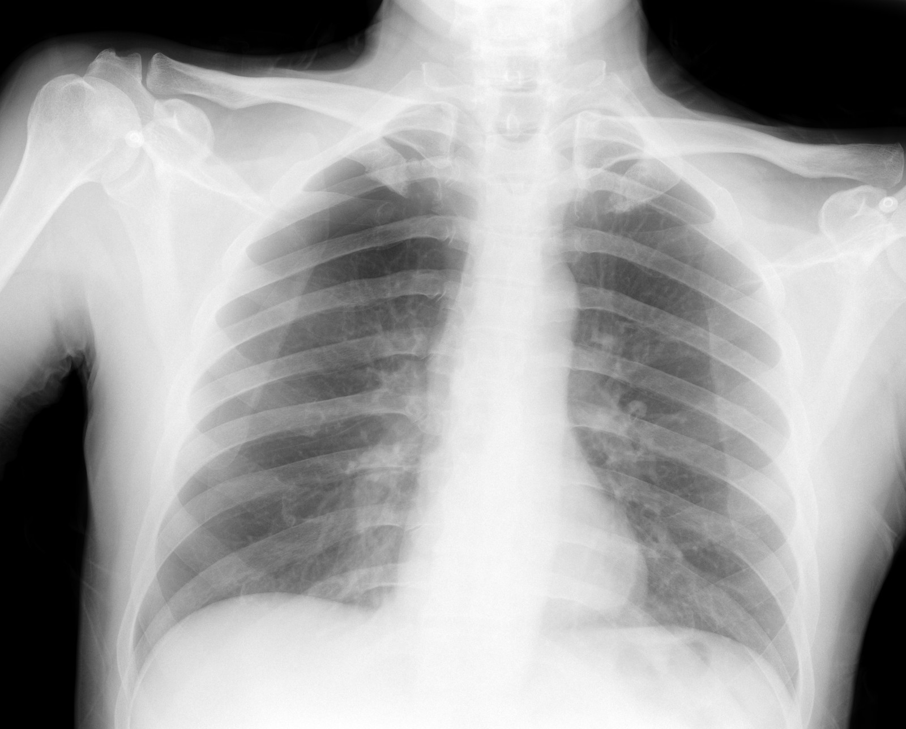

35 yaş, erkek. Spontan pnömotoraks vaka örneği.
Önce grafiyi kendiniz değerlendirin, ardından "Hattı göster" ile pnömotoraks alanını kontrol edin. Büyütmek için grafiye tıklayın.
Vaka 2

51 yaş. Sağ spontan pnömotoraks, 2. atak.
Grafi yatak başı (AP) çekilmiştir; skapula akciğer alanının üzerine biner ve ince pnömotoraks hattı kolayca gözden kaçabilir. Önce kendiniz arayın, ardından "Hattı göster" ile kontrol edin. Büyütmek için grafiye tıklayın.
Fare tekerleği ile yakınlaştırın, sürükleyerek gezdirin. Telefonda iki parmakla yakınlaştırın.